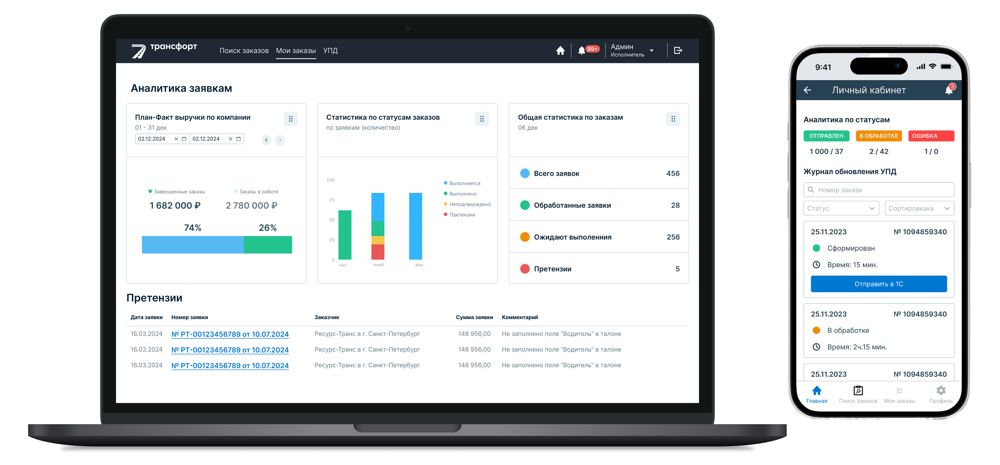
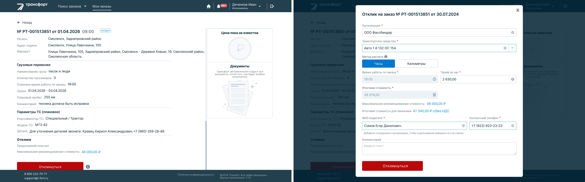
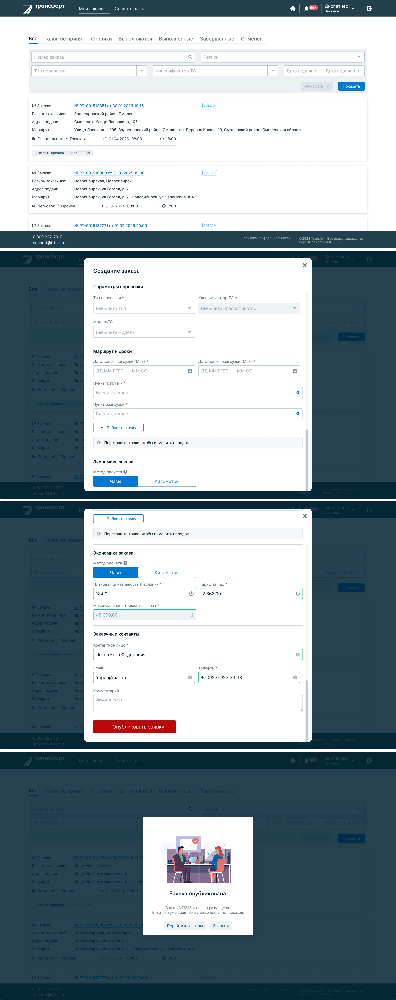
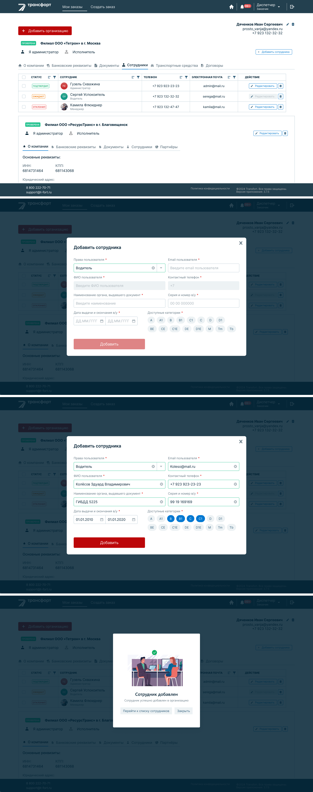
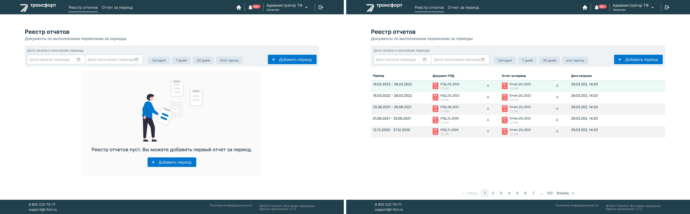

Трансфорт — платформа управления подрядной техникой различных типов, которая используется для организации работы ресурсов и контроля выполнения задач внутри системы.
На момент начала проекта у заказчика уже существовала рабочая версия платформы, однако она поддерживала ограниченное количество сценариев работы и не предусматривала отдельной роли администратора. Интерфейс требовал систематизации по мере расширения функциональности.
Задачей проекта стало развитие структуры интерфейсов платформы и проектирование новых пользовательских сценариев без радикального изменения привычной логики работы системы, чтобы сохранить доверие существующих пользователей.
Существующая версия платформы поддерживала ограниченное количество сценариев работы пользователей.
Работа началась с анализа существующей версии платформы и пользовательских сценариев взаимодействия с техникой внутри системы.
На основе текущей структуры интерфейсов были спроектированы новые пользовательские потоки работы с подрядной техникой различных типов, а также разработана логика отдельной административной роли внутри платформы.
При проектировании важно было сохранить привычную логику взаимодействия пользователей с системой и развивать интерфейс постепенно, не нарушая сформированные сценарии работы существующих клиентов.
Спроектирована универсальная логика экранов управления ресурсами, позволяющая работать с различными типами техники внутри одной системы без усложнения интерфейса.
Разработаны сценарии взаимодействия пользователей с техникой и подрядчиками внутри платформы, обеспечивающие последовательную работу с задачами.
Создана единая структура экранов системы управления ресурсами, позволяющая упростить навигацию и снизить сложность работы с интерфейсом.
Продумана согласованная модель взаимодействия между разделами платформы, обеспечивающая целостный пользовательский сценарий работы с техникой.

Роль: Исполнитель/отклик на заказ

Роль: Заказчик/создание заказа

Роль: Заказчик/добавление сотруника

Роль: админ/отчёты
Проект стал опытом проектирования интерфейсов платформы управления подрядными ресурсами с различными типами техники внутри единой системы.
Основной задачей стало выстроить универсальную структуру экранов и пользовательских сценариев, которая сохраняет гибкость работы системы и остаётся понятной для пользователя.
Работа над проектом позволила систематизировать взаимодействие пользователей с техникой и подрядчиками и создать согласованную логику управления задачами внутри платформы.